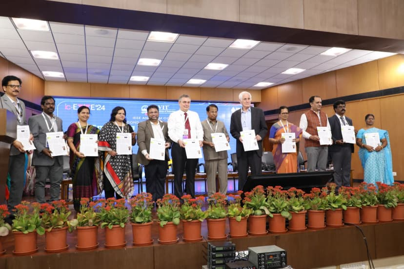
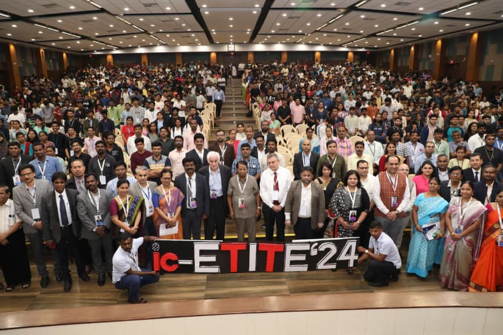
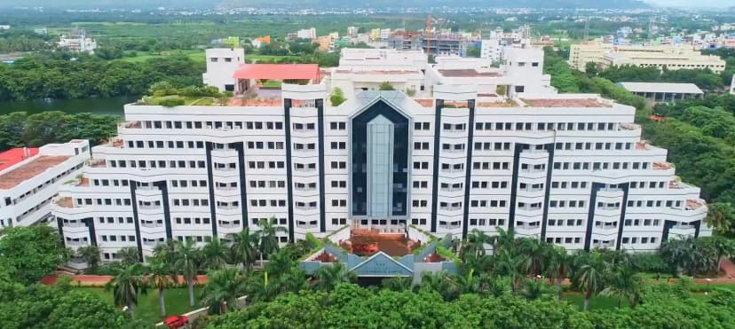
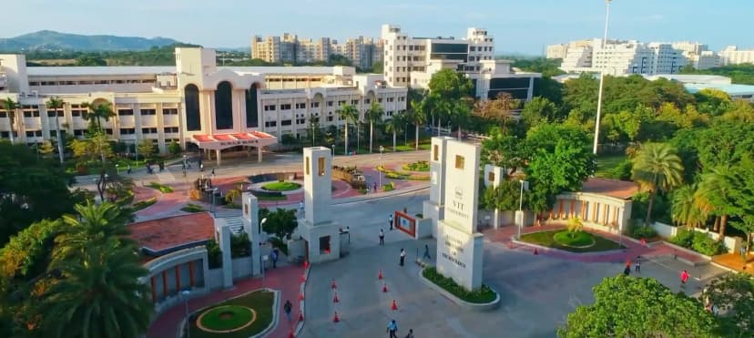
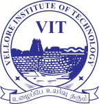
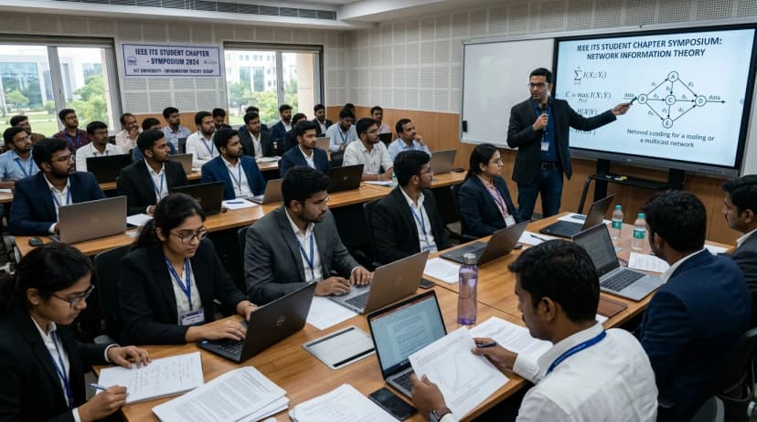

About ic-ETITE'28
The conference takes place at VIT Vellore on .
ic-ETITE'28 provides an international platform for researchers, academicians, engineers, industry professionals, and students to present and exchange research across Information Technology, Computer Engineering, Communication Engineering, Electronics Engineering, and related areas.
The conference supports knowledge sharing, interdisciplinary collaboration, industry–academia interaction, and future research partnerships. Original, unpublished research papers are invited.


Theme of the Conference
ic-ETITE'28 emphasizes advancing research and innovation in Information Technology and Engineering. It provides a global platform to showcase ideas, exchange knowledge, and explore emerging developments in science and technology.
The conference encourages international collaboration, interdisciplinary research, and global research networks that support future joint initiatives and academic partnerships.
About VIT
Vellore Institute of Technology (VIT) was established in 1984 as Vellore Engineering College and was granted university status by the Government of India in 2001 under Section 3 of the UGC Act, 1956. Founded by Dr. G. Viswanathan, VIT is committed to quality higher education, research, and innovation.
VIT promotes an international academic environment through research, global collaborations, student and faculty exchanges, and joint research. Its vision is “Transforming life through excellence in education and research.”
Visit VIT official website- QS World University Rankings by Subject 2026: 119th globally in Engineering & Technology; 86th in Computer Science & Information Systems; 87th in Electrical & Electronic Engineering; several disciplines in the global top 200.
- QS Sustainability Rankings 2026: 352nd globally, 7th among Indian institutions.
- Shanghai Ranking (ARWU) 2025: 501–600 band globally, 1–2 band among Indian institutions.
- NAAC A++ grade, CGPA 3.66 / 4; NIRF 2025: 14th University, 14th Research, 16th Engineering.


About SCORE
The School of Computer Science Engineering and Information Systems (SCORE) at VIT Vellore covers Computer Science, Information Technology, Artificial Intelligence, Data Engineering, Cyber Security, Software Engineering, and Computer Applications.
Programmes include B.Tech. IT; B.Tech. CSE (AI and Data Engineering); B.Tech. CSE (Cyber Security); BCA; B.Sc. Computer Science; M.Tech. CSE (Cybersecurity); M.Tech. Software Engineering; MCA; M.Sc. AI and Machine Learning; M.Tech. by Research; and Ph.D.
Its programmes span undergraduate, postgraduate, research, and doctoral study. SCORE emphasizes interdisciplinary research, industry collaboration, consultancy, industry-supported laboratories, Centres of Excellence, seminars, workshops, expert talks, symposia, and conferences.
Visit SCORE official school portal
About IEEE Information Theory Society, VIT
The IEEE Information Theory Society at VIT explores advances in information theory and applies them to current technological challenges. The student chapter organizes technical events, workshops, and seminars, and collaborates with academia and industry to help students build innovative solutions and technical expertise.
Visit IEEE ITS chapter website
Highlights of ic-ETITE'24 and ic-ETITE'20
Previous editions brought together research communities and published presented papers in IEEE Xplore.